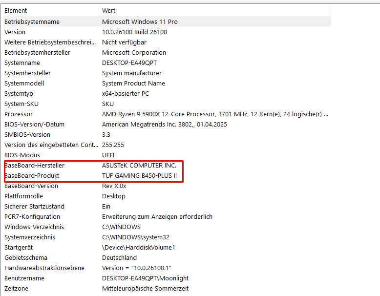
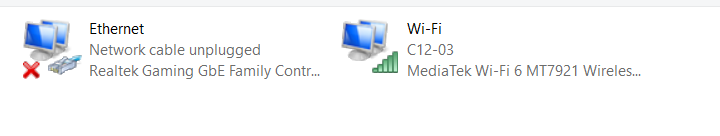
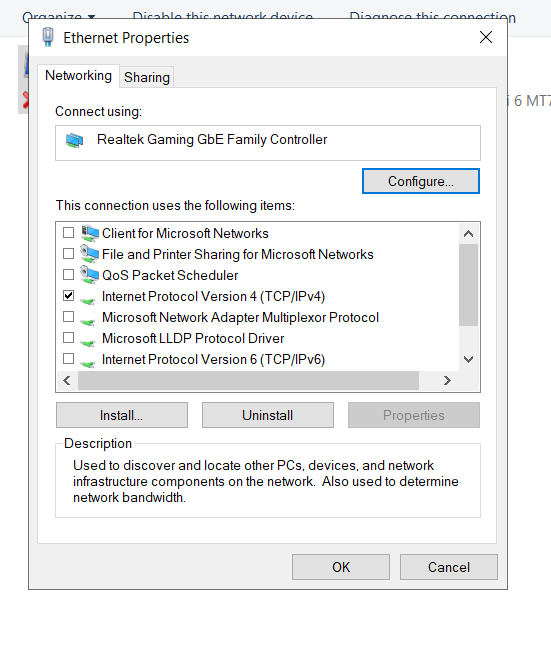
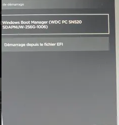
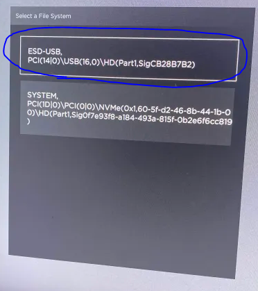
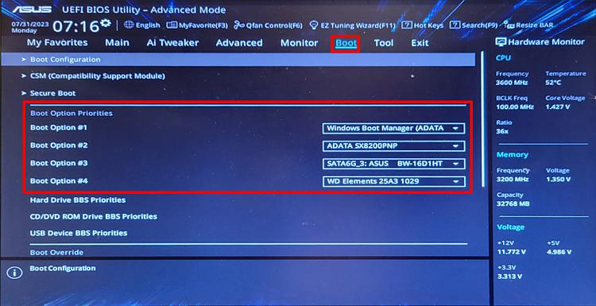

Welcome to
Creed
The reliable permanent spoofing solution. Follow the steps below in order for a clean and stable result.
Get Started ↓👋Welcome to Creed
To use the Creed Permanent Spoofer effectively, follow the instructions carefully. This will ensure it works well and reduces mistakes. Don't skip steps, and reach out to support if you need help.
Creed provides a driver/driverless permanent spoofing solution designed to keep your hardware clean. Follow each step in order, from BIOS configuration to final verification, for the best possible result.
❓FAQ
Do I need to reinstall Windows?
Yes, for the best and most reliable result a clean Windows installation is recommended. Follow Step 3 carefully for the correct reinstall method for your setup.
Is BIOS flashing required?
If you play Valorant, a BIOS (VGC) flash is required. For Fortnite and other titles it is optional but recommended for stability. See Step 1.
How long does the spoofer last?
Creed is a permanent spoofer. Once set up correctly, the spoof remains active and does not require re-running on every boot.
Do you support my motherboard?
If your motherboard follows a standard BIOS flow, it is supported. For locked or unusual boards, check the ASUS / HP guides and contact support if needed.
What if I get banned after setup?
Check the Troubleshooting and Delay Ban Warning sections. If the issue continues after following the guide, open a ticket so our team can assist you.
📦Tools
The recommended tools below cover BIOS access, media creation, driver verification and network flags. Download and install them all before proceeding to the steps.
- Latest Windows media creation tool — for a clean reinstall
- Your motherboard BIOS tool (ASUS / MSI / Gigabyte / ASRock / HP) — for flashing if needed
- Rufus or equivalent — to create a bootable USB
- Network driver package — for post-reinstall connectivity
- Creed loader — the permanent spoofing tool (delivered on purchase)
1BIOS Flashing (VGC)
Flashing clears leftover VGC (Valorant anti-cheat) traces and resets the platform keys in your BIOS. This is a required step for a clean permanent spoof on Valorant.
▶️ Flash tutorials by motherboard
🟦 ASROCK: How to flash ASRock BIOS
🟦 GIGABYTE: How to flash Gigabyte BIOS
🟦 LENOVO: How to flash Lenovo BIOS (1) · (2)
Before you begin
- Know your exact motherboard model
- Have a USB drive (8GB+) and a PC that still boots
- Download the matching BIOS file from your board manufacturer
- Back up any important data on the machine
Flashing steps
- Identify your board
Check the model in MSINFO32 or on the board itself, then grab the correct BIOS from the manufacturer site. - Prepare a USB
Format a FAT32 USB drive and place the downloaded BIOS file at the root. - Enter BIOS
Restart and press the correct key (DEL / F2 / F10 depending on brand) to open BIOS. - Launch the flash tool
Use the built-in flashing utility (EZ Flash / Flashback / M-Flash) and select the file from the USB. - Flash & wait
Confirm, let the flash finish. Do not power off during flashing.
🔍 How do you check if your flash was successful?
The version & date should be changed, which can be found at your System Information.
2BIOS Config
After flashing, configure the BIOS settings so the fresh firmware state persists and no leftover profiles remain.
- Load optimized defaults
In BIOS, select "Load Optimized Defaults" then save & exit once. - Disable Secure Boot (for now)
Set Secure Boot to disabled — it will be re-enabled in the spoofing step if required. - Check platform keys
If your board offers "Clear PTT / Clear Secure Boot keys / Restore Factory Keys", run it to wipe signature data. - Reboot
Save and exit, letting the board reconfigure itself.
3Windows Reinstall
🟦 Intel users → Normal reinstallation
🟥 AMD users → RAID reinstallation
▶️ Video tutorials
🔹 Video — Normal reinstallation (Intel)
🔹 Video — RAID reinstallation (AMD)
🟦 Normal reinstallation (Intel)
- Download Media Creation Tool
Get it from the official Microsoft page and click "Download Now". - Run as administrator
Open the tool and select "Create installation media (USB flash drive)". - Use recommended options
Continue and let it write the USB. It should take a few minutes. - SHIFT + Restart
HoldSHIFT, click Restart, keep holding until the blue menu appears. - Boot from the USB
Choose "Use a device" and select your flash drive. - Select Windows Pro
Pick a Pro edition, then "I don't have a product key". - Custom install
Select "Custom: Install Windows only (advanced)". - Open diskpart
PressSHIFT + F10, typediskpart, thenlist disk. - Clean your drives
For each internal drive (NOT the USB):select disk Xthenclean. - Refresh and install
Close CMD, click Refresh, select the unallocated space, and install. - Offline account
Create an offline account and turn off all privacy settings.
🟥 RAID reinstallation (AMD)
RAID / VMD setups hide the drive behind a controller, so the standard flow won't see it. Follow these steps carefully.
- Download the Media Creation Tool
Go to Microsoft, click "Download Now". - Run as administrator
Open the tool and select "Create Installation media (USB flash drive)". Use all the recommended options and wait for it to finish. - Save & exit the BIOS
Make sure your USB is plugged into the PC, then save & exit BIOS. - Windows setup loads
Press Next. If asked for a product key, select "I don't have a product key". - Select the OS
Choose Windows 10 Pro, accept the TOS, press Next. - Load driver
At "Where do you want to install Windows?", click Load driver → Browse → navigate to the USB. - Pick your RAID driver
Select the folder dropdown, choose either NVMe_RAID or SATA_RAID → press Ok. - Choose your driver
Select the first option "AMD-RAID Bottom Device" driver → Next. - Install
Select the disk to install Windows on, press Next, and wait for it to finish.
1. Make an offline account or a new Microsoft account. Don't log into your old one.
2. Do not log into OneDrive, GeForce Experience & Medal with the same account.
3. Install vc_redist.x64.exe to prevent any errors.
🧪 How to check if my RAID worked after reinstall
- Open Task Manager
Click the Performance tab. - Click "Disk 0 (C:)"
It should say "AMD-RAID" on the top right.
4Verify MSINFO32
🖥️ Auto Motherboard Detection System
Our permanent spoofer uses a system called Auto Motherboard Detection to dynamically detect your motherboard model and apply the correct spoofing configuration.
How to check?
- Open MSINFO32
PressWin + R, typemsinfo32, and hit Enter. - Under System Summary, look for
- BaseBoard Manufacturer
- BaseBoard Product
- BaseBoard Version - Cross-check with BIOS > EZ Mode
To enter BIOS easily, open CMD as Administrator and run:shutdown /r /fw /t 0

If any value in msinfo32 or BIOS does not match your original hardware, use our SMBIOS Fixer.
If you've ever used other spoofing tools (e.g. "bad/free perms") before ours, use our SMBIOS Fixer.
5Windows Setup
Install the required dependencies so the spoofer works properly.
- Install your GPU and chipset drivers (clean install)
- Install the latest Visual C++ Redistributables
- Install the latest .NET Desktop Runtime
- Keep Windows fully updated (Windows Update)
6Permanent Spoofing
Run the permanent spoof now that everything is configured.
- Close background apps
Exit games, launchers and antivirus (temporarily). - Run as administrator
Right-click the Creed loader > Run as administrator. - Click Spoof
Let it complete. Do not interrupt or restart during the process. - Reboot
Restart once the tool reports success, then check Step 4 again to confirm the new values.
7DISK Bypass (EAC/BE)
Use this only if you cannot RAID / your game uses EAC or BattlEye disk checks.
- Identify drive
Open "Disk Management" and note your boot disk model and serial. - Run the disk bypass
Execute the disk bypass within the loader for your specific anti-cheat (EAC/BE). - Verify
Re-open Disk Management to confirm the serial was regenerated.
8Network Unflag
Use these only if you get report ban / 24h ban from reports — this is only extra steps.
Step 1 — Adapter settings
- Open network connections
PressWin + R, typencpa.cpland click OK. Disable everything but Ethernet.
- Open Properties
Right-click on the connection you are using and click Properties. - Disable all except IPv4
Change your settings so they look like this: Disable All except IPv4.
Step 2 — Advanced adapter settings
- Open Device Manager
PressWin + R, typedevmgmt.mscand click OK. Press the arrow of Network Adapters. - Open Properties
Right-click on the connection you are using and click Properties. - Go to the Advanced tab
Search for these settings and set them up as follows (if some settings are missing, skip them):
Advanced EEE — Disabled
Energy Efficient Ethernet — Disabled
Green Ethernet — Disabled
Auto Disable Gigabit — Disabled
NS Offload — Disabled
Power Saving Mode — Disabled
ARP Offload — Disabled
Flow Control — Disabled
IPv4 Checksum Offload — Disabled
Large Send Offload v2 (IPv6) — Disabled
TCP Checksum Offload (IPv6) — Disabled
UDP Checksum Offload (IPv6) — Disabled
9Usage of VPN
For the cleanest sessions it is strongly recommended to use a VPN.
Connect your VPN before launching the game, and use it consistently to avoid IP-based flags.
🖥️HP Spoof
- Plug in your USB (FAT-32)
Make sure the USB is formatted as FAT-32. - Open the spoofer → Custom Tab
Go to the Custom tab and press HP Unlock. - Enter BIOS (usually F9)
Choose "Load File From EFI".
- Select your USB drive

- Select "bootx64.efi"

- Wait for the prompt
It will show "Manufacturer mode to unlock mode" → click YES. - Boots into Windows
If Windows does not boot, change "Boot Priority #1" to "Windows Boot Manager".
🖥️ASUS Secure Boot Bypass
Secure Boot Bypass method for Fortnite and Valorant. These steps take 5 minutes at most.
- Close the spoofer
As soon as "Permanent spoof completed" appears, close the spoofer. - Restart & enter BIOS
Open CMD as Administrator and run:shutdown /r /fw /t 0 - Set boot order
In BIOS: Advanced Mode > Boot > Boot Option #1 = UEFI OS, Boot Option #2 = Windows Boot Manager. - Secure Boot → Other OS
Go to Secure Boot, make sure it is set to Other OS, then navigate to Key Management and clear all keys. - Start your PC
If you see a series of commands spamming on the screen, you've done everything correctly.
Now the Secure Boot Bypass steps:
- Step 2 — Get your GUID
Open Powershell as admin, type[Guid]::NewGuid()and note the result. Take a picture of that GUID with your phone — it may be needed on some specific ASUS models.
(Not always necessary, only on some more specific Asus models.) ✅ - How to easily boot into BIOS
Watch guide - Step 4 — Secure Boot settings
Go to Boot > Secure Boot > OS Type [Windows] & Secure Boot Mode [Custom] (under "Boot configuration"). If there is no "Secure Boot Mode", that's fine! ✅ - Open 'KEK Management'
- Choose "Append key"
- Choose "No" to load the EFI from a file on external media
- Choose USB file system
- Choose the "vgk.der" file
- Select file format as "Public Key Certificate"
- Enter the GUID (with hyphens) you saved earlier, then press enter
- Finally press "Yes" to append KEK with content from the .der file
- Do the same for 'DB Management'
Do the same steps for DB Management as you did for KEK Management. - Set boot priority
Set "UEFI OS" as Boot priority #1 and Windows Boot Manager as #2. Save & exit BIOS.
🧹Extra Spoofing
Instructions for using — Download DeviceCleanup
Unpack the Files
Extract the contents of DeviceCleanup.zip to a folder on your computer.
Run the Cleanup Script
Locate Start_DeviceCleanup.bat in the extracted folder.
- Run as administrator
Right-click on the file and select Run as administrator. - Restart your PC
Restart your computer to apply the changes.
🖥️Monitor Spoofing
- Unpack the files
Extract the contents of cru-1.5.3.zip to a folder on your computer. - Run CRU.exe
Locate CRU.exe in the extracted folder. Right-click and select Run as administrator. - Follow the video
Change serials for all your monitors.
🛠️ Important Note on Editing Serials
✅ Example:
Xka25 ➝ Vga62❌ Do NOT completely overwrite or randomize values like
OT2374K.- If your monitor goes black: unplug the HDMI cable, restart your PC, and replug-in the HDMI cable.
✅Finalization (IMPORTANT)
Complete these final checks so your spoof stays solid.
- Confirm the spoof
Re-open MSINFO32 (Step 4) and confirm the values changed. - Re-enable Secure Boot
If required, turn Secure Boot back on in BIOS. - Re-check your account
Log back into your account and confirm no hardware-related messages appear.
🏆FN Tournaments
For Fortnite tournaments, additional account staging is required. Ensure your account is clean, your hardware spoof is finished and your VPN is active before queueing in competitive events.
🔧Troubleshooting
The loader won't run
Run as administrator and temporarily disable third-party antivirus / SmartScreen.
Ban after a few days (delay)
This is expected on some titles. Apply the Network Unflag (Step 8) and, if needed, re-run the disk bypass before continuing.
Game still shows old hardware
Reboot fully, verify MSINFO32 (Step 4), then re-run the spoof (Step 6).
Still stuck?
Open a ticket with your MSINFO32 screenshot and our team will help.
⏳Delay Ban Warning
To minimize risk: always use a VPN, do not login into flagged accounts right after setup, and stage new accounts before competitive play.
Always check this page before making changes to your setup, and contact support if you have any doubts.